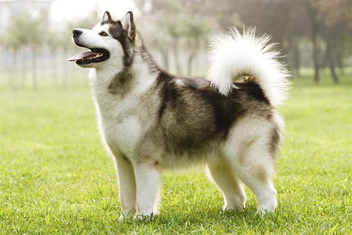
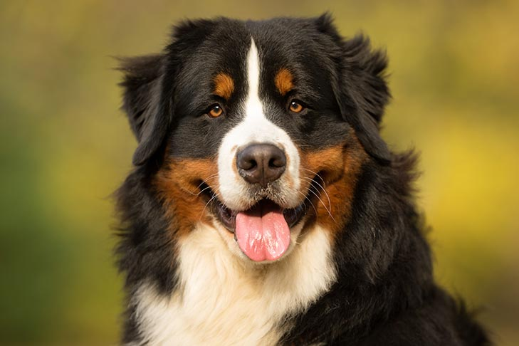
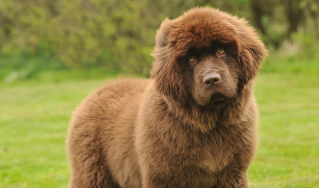

Below are examples of some best dogs




There are 3 important criteria to determining if a dog is the best dog. The list below asks the 3 questions for the determination.
If you have answered yes to any of the above questions, then the dog is, in fact, the best dog.